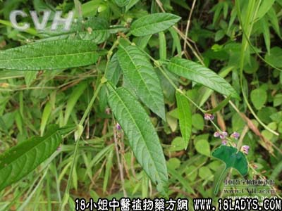

(本文解释权归中药材天地网兄弟站-18小姐中医植物药方网所有,如需转载请注明出处)
海金沙藤(中药材植物名:柳叶海金沙)(植物科目:海金沙科)

别名:金沙藤，海金沙草。
植物名：柳叶海金沙。
生长环境；本品为扳援草本。生于山地杂草树林中或溪边灌木丛中。
分布：广东山地极常见。广西、贵州、云南等地亦有。此外，亚热带及澳洲东北部亦有。
入药部分：全草。
采集期：全年、秋季最好。
自采地点：菜地、山岗。
性味：性凉、味淡。
功能：清热利水。
主治、用量和用法：①癍痧发热，配伍用。②小便刺痛：干用1至2两，清水煎服；③热淋：干用1至2两，清水煎服。
验方1：（治热淋、小便痛方）海金沙藤1两、车前草1两、清水三碗、煎成一碗服。
（方解）本方海金沙藤清热利水、车前草去膀胱湿热，兼能利尿，药虽两味，可使热情湿去而痛自止。
（方歌）热淋溺痛金沙藤，前草利水作为臣，一两藤连一两草，热清湿去此方珍。
验方2（治癍痧发热方）海金沙藤1两，岗梅根5钱、大头陈5钱、山芝麻5钱、蛇泡簕根5钱、狗肝菜5钱、清水五碗，煎成一碗服。
（方解）方中海金沙藤、山芝麻、蛇泡簕根、狗肝菜、大头陈，清热解毒，热则生津、用岗梅根以救共津，对于初起有效。
（方歌）癍痧发热金沙藤，山麻泡簕大头陈，狗肝菜合岗梅蔃，清热解毒又生津。
(本文解释权归中药材天地网兄弟站-18小姐中医植物药方网所有,如需转载请注明出处)